ファイル管理ソフトウェア Nautilus のウィンドウでファイルのアイコンをダブルクリックすれば，そのファイルに関連付けられたアプリケーションが起動します．例えば，"kenpou.txt" のようにファイル名の拡張子が ".txt" のファイルは，演習室のコンピュータでは標準で「テキストエディタ」に関連付けられいます．この関連付けは，次のようにして変更できます．
まず，変更したいファイルのアイコンをマウスの右ボタンでクリックします．
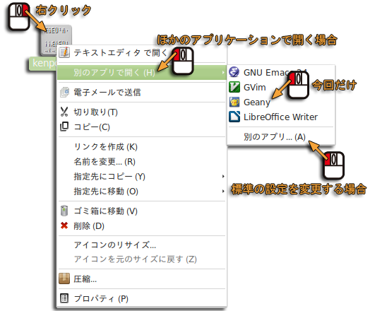
メニューが現れますので，一時的に別のアプリケーションで開くなら，「別のアプリで開く」から開くアプリケーションを選んでください．標準の設定を変更して次回以降ダブルクリックで自動的に開くアプリケーションを違うものにするには，その下にある「別のアプリ... (A)」を選択してください．
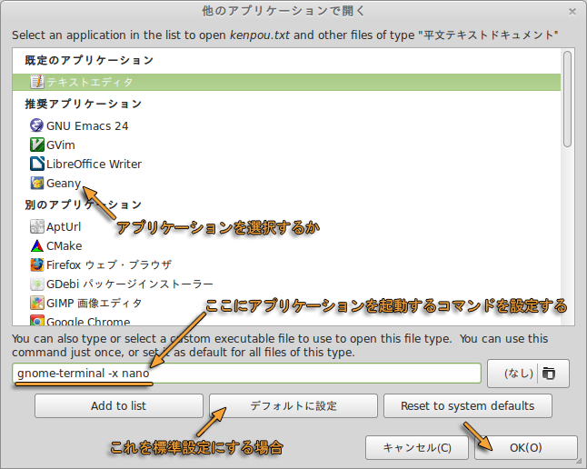
「ほかのアプリケーションで開く」のウィンドウで開くアプリケーションを選んだ後，「デフォルトに設定」をクリックしてから「閉じる」をクリックしてください．なお，「端末」の中で使用するアプリケーションを起動する場合は，このウィンドウの下の欄に「gnome-terminal -x (起動するアプリケーション)」とすれば，(起動するアプリケーション) に指定したコマンドを，ダブルクリックしたファイルのファイル名を引数として与えて起動します．
前回に引き続いて，まずコマンドの操作について解説します．今回はコマンドを使ったファイルの操作を行います．最初に端末のウィンドウを開いてください．$ はプロンプトを示します．
あるファイルと同じ内容のファイルを作成すること（ファイルのコピー）は cat コマンドでもできますが，普通は cp コマンドを使います．
| とりあえずファイル a を作る |
|---|
$ date > a[Enter]
|
cp コマンドを使って a と同じ内容のファイル b を作ります．ファイル b が既に存在した場合，それまで b に入っていた内容は失われます．
| cp コマンドで a と同じ内容のファイル b を作る |
|---|
$ cp a b[Enter]
|
ファイル a とファイル b の内容を比較してみましょう．内容は同じはずです．
| ファイル a とファイル b の内容を比較する |
|---|
$ cat a[Enter] 2014年 5月 8日 木曜日 13:27:13 JST $ cat b[Enter] 2014年 5月 8日 木曜日 12:27:13 JST ↑b は a と同じ内容 |
ファイル名を変更するには mv コマンドを使います．a，b という２つのファイルがあるとします（上で作ったのであるはず）．ls コマンドで確認してください．
| ls コマンドでファイルの一覧を見る |
|---|
$ ls[Enter]
a b firefox public_html rpm thunderbird windows ダウンロード テンプレート …
|
ファイル a を ファイル x に移動 (move) します．これは結果的にファイル a のファイル名を x に変更したことになります．
| ファイル a を ファイル x に移動する |
|---|
$ mv a x[Enter]
|
この後，ls コマンドでファイルの一覧を見てみます．ファイル a が無くなり，代わりに x ができています．
| ファイルの異動後のファイルの一覧を見る |
|---|
$ ls[Enter] b firefox public_html rpm thunderbird windows x ダウンロード テンプレート … ←a が無くなり x ができる |
今度はファイル b の名前を x に変更します．ファイル b をファイル x に移動するので，それまであったファイル x（a の内容が入っている）は無くなります．
| ファイル b を ファイル x に移動する（それまでの x の内容は失われる） |
|---|
$ mv b x[Enter] $ ls[Enter] ←ファイルの一覧を見る firefox public_html rpm thunderbird windows x ダウンロード テンプレート … ←b が無くなる |
不要なファイルを削除するには，rm コマンドを使います．rm コマンドで削除したファイルは復旧できないので気を付けてください．「トイ・ストーリー」などのフル CG アニメーション映画で有名な天下の Pixar さまでも，かつてこういうことがあったそうです．
| ファイル x を削除する． |
|---|
$ rm x[Enter]
|
rm コマンドの引数には，複数のファイルを指定することもできます．ファイル a とファイル b を同時に削除するには，次のコマンドを実行します．
| ファイル a とファイル b を同時に削除する |
|---|
$ rm a b[Enter]
|
ここまでで出てきたコマンド
- cp
- ファイルをコピーします（同じ内容の別のファイルを作ります）．
- mv
- ファイルの名前を変更します（ファイルを移動します）．
- rm
- ファイルを削除します．
"*"や"?" などの特殊文字を使ってファイル名のパターンを表して，複数のファイルを一括して指定することができます．このような文字はワイルドカードと呼ばれます．
| ワイルドカードに使われる文字 | |
|---|---|
| 任意の１文字にマッチする | ? |
| 任意の文字列にマッチする | * |
| [ と ] の間のどれか１文字にマッチする | [ ] |
| [^ と ]の間にある文字以外の１文字にマッチする | [^ ] |
| 辞書の順で "文字1" と "文字2" の範囲にある１文字にマッチする | [文字1-文字2] |
| 辞書の順で "文字1" と "文字2" の範囲にない１文字にマッチする | [^文字1-文字2] |
パターンの例
- a*
- a から始まるファイル名のパターン
- a*c
- 先頭が a で末尾が c のファイル名のパターン
- ???
- ３文字のファイル名のパターン
- d[135]
- d1，d3，d5 の３つのファイルのパターン
- [a-z]*
- 先頭が小文字のファイル名のパターン
- [^0-9]*
- 先頭が数字ではないファイル名のパターン
- s[0-9][0-9]50[0-9][0-9]
- デザイン情報学科の学生のユーザ名のパターン
| ワイルドカードの使用例 | |
|---|---|
| a で始まるファイルの詳細を表示する． ls コマンドに -l オプションを付けるとファイルの詳細を表示する． |
$ ls -l a*[Enter]
|
| 末尾が ".doc" のファイルを連結して表示する． |
$ cat *.doc[Enter]
|
| d1.bak，d2.bak，d3.bak の３つのファイルを削除する． |
$ rm d[1-3].bak[Enter]
|
コンピュータのファイルを保存したり管理したりするためのメカニズムのことを， ファイルシステムと呼びます．このコンピュータのファイルシステムには非常にたくさんのファイルが保存されています．もし仮にそれらが同じ場所にあったとすると，目的のファイルを見つけるのがかなり大変になります．また他人と同じファイル名を付けないようにも気をつけなければならず，とっても面倒なことになります．
そこで，これらのファイルを用途や所有者ごとに分類・整理して保存するために，UNIX や Linux をはじめとする近代的なオペレーティングシステムのほとんどのファイルシステムは，ディレクトリと呼ばれる考え方で構成されています．
これは世界に例えるなら，世界を下図右のような木構造で表したものです．これは木がひっくり返った形をしており，一番根本がてっぺんにあります．この木構造では，「住所」は“／日本／和歌山／和歌山”のように表します．
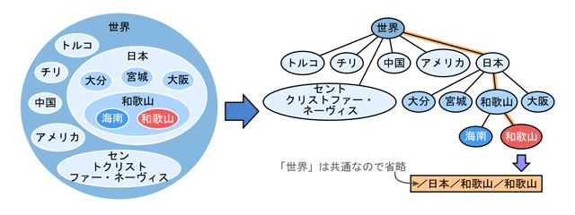
演習室の Linux のファイルシステムは，実際には下図のような木構造（ディレクトリ木）になっています．てっぺんのディレクトリ "/" は ルートディレクトリと呼び， ファイルシステム全体を表します． その下に bin，etc，usr などのサブディレクトリがあり，usr の下にもさらに bin，etc，local などのサブディレクトリがあります．
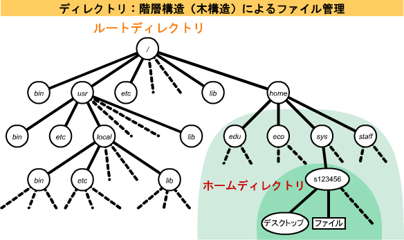
それでは，自分が作業してるディレクトリを確認してみましょう．自分が作業しているディレクトリをカレントディレクトリまたはワーキングディレクトリ(作業ディレクトリ）と呼びます．カレントディレクトリを確認するには pwd コマンドを使います．
| pwd コマンドでカレントディレクトリを表示する |
|---|
$ pwd[Enter] /home/sys/s123456 ←カレントディレクトリのパス |
端末を開いた直後，その端末内で動作しているシェルのカレントディレクトリは，利用者のデータを保存する外部記憶装置の領域の起点になっています．この起点のことをホームディレクトリと呼びます．したがって，上記の "/home/sys/s123456" は，ホームディレクトリを表します．
ホームディレクトリ以外のほとんどのディレクトリは，他人のホームディレクトリを含めて， 利用者が勝手にファイルを作成したりすることはできないようになっています． 例外的に "/tmp" などは誰でもファイルを置くことができますが， このディレクトリに置いたファイルはコンピュータを再起動すると削除されてしまいます．また，演習室のコンピュータの "/home" 以下のディレクトリは， 実際には目の前にあるコンピュータ（ワークステーション）ではなく別のコンピュータ（サーバ）上にあり，LAN を使って共有しています．
Windows を起動したとき，ホームディレクトリは H: ドライブになります．
ディレクトリ木の階層は "/" で区切ります．あるファイルやディレクトリのある場所の表記をパス（経路）と呼びます．パスをルートディレクトリを起点にして表す場合を，絶対パス，カレントディレクトリを起点にして表す場合を相対パスと呼びます．上図の「デスクトップ」というディレクトリは，絶対パスだと "/home/sys/s123456/デスクトップ" と表されますが，"/home" というディレクトリからの相対パスで表せば "sys/s123456/デスクトップ" となります．
パス
- 絶対パス
- あるファイルやディレクトリが置かれている場所を，ルートディレクトリを起点にした経路で表す場合．
- 相対パス
- あるファイルやディレクトリが置かれている場所を，カレントディレクトリなど特定の場所からの経路で表す場合．
これまでのことを復習します．「スタート」をクリックしてください．
それでは，カレントディレクトリを変更（移動）してみましょう．カレントディレクトリを変更するには cd コマンドを使います．最初に，もう一度 pwd コマンドを実行して，カレントディレクトリを確認してください．
| pwd コマンドでカレントディレクトリを確認する |
|---|
$ pwd[Enter] /home/sys/s123456 ←ホームディレクトリのパス |
現在はホームディレクトリにいると思います．
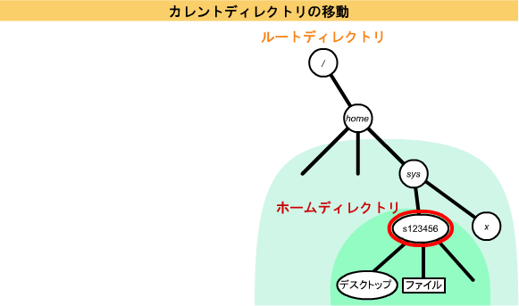
カレントディレクトリを一つ上のディレクトリ "/home/sys" に移します．一つ上のディレクトリは ".."（ピリオド２個）で表します．これをペアレントディレクトリ（親ディレクトリ）と呼びます．
| 一つ上のディレクトリに移動する |
|---|
$ cd ..[Enter] ←ひとつ上に上がる $ pwd[Enter] /home/sys |
このディレクトリには自分のホームディレクトリのほか，システム工学部のほかの全学生のホームディレクトリが含まれています．これは ls コマンドで確認できます（いっぱい出てきます）．
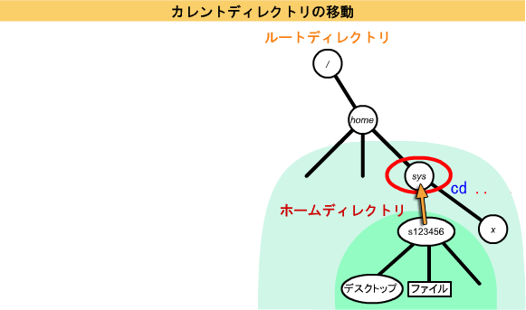
次に，その中にある自分のユーザ名（以下の "s123456" を自分のユーザ名に置き換えてください）のディレクトリに移動してください．
| カレントディレクトリにある "s123456" というディレクトリに移動する |
|---|
$ cd s123456[Enter] ←ひとつ下に降りる $ pwd[Enter] /home/sys/s123456 |
このようにして，カレントディレクトリに内包されているディレクトリにカレントディレクトリを移すことができます．これは相対パスによる移動です．
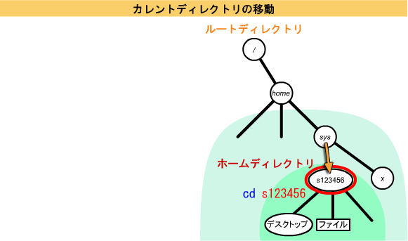
こんどは，カレントディレクトリをファイルシステムの起点であるルートディレクトリに移動してみましょう．これは "cd .." を繰り返してもできますが，絶対パスを指定すれば，いきなりそのディレクトリに移動することができます．"/" はルートディレクトリの絶対パスです．
| ルートディレクトリに移動する |
|---|
$ cd /[Enter] ←ルートディレクトリ $ ls[Enter] bin boot etc … tmp usr |
ルートディレクトリの直下には，Linux を稼働させるための，重要なプログラムやデータが置かれています．
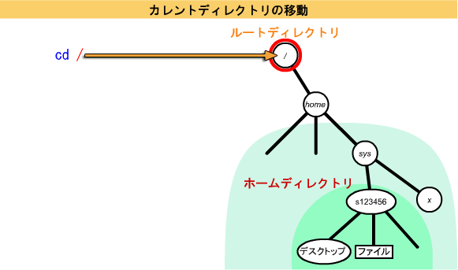
移動先に絶対パスを指定すれば，カレントディレクトリがどこにあっても，指定したディレクトリに移動できます．"/home" を経由せずに "/home/sys" に移動してみましょう．
| 絶対パスを指定して移動する |
|---|
$ cd /home/sys[Enter] ←絶対パス $ pwd[Enter] /home/sys |
カレントディレクトリがルートディレクトリにあればルートディレクトリからの相対パス "home/sys" でも同じ場所に移動できますが，"/home/sys" というように "/" から始まる絶対パスを指定することで，カレントディレクトリがどこにあっても，そのディレクトリに移動できます．
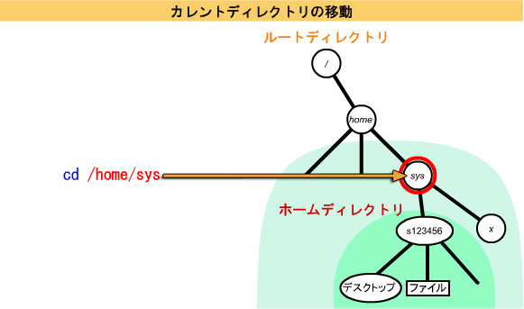
cd コマンドを引数を付けずに実行すれば，カレントディレクトリがどこにあっても，ホームディレクトリに戻ることができます．
| cd コマンドに引数を付けなければホームディレクトリに戻る |
|---|
$ cd[Enter] ←引数なし $ pwd[Enter] /home/sys/s123456 ←ホームディレクトリ |
"."（ピリオド１個）と ".."（ピリオド２個）
- "."（ピリオド１個）
- カレントディレクトリ（作業ディレクトリ）を表します．
- ".."（ピリオド２個）
- カレントディレクトリのペアレントディレクトリ（親ディレクトリ）を表します．カレントディレクトリがホームディレクトリ (上図では "/home/sys/s123456") にあるとき，".." は "/home/sys"，"../.." は "/home"，"../../sys" は "/home/sys" になります．
これまでのことを復習します．「スタート」をクリックしてください．
ホームディレクトリ内には，自分でディレクトリ（サブディレクトリ）を作成できます．ディレクトリの作成には mkdir コマンドを使います．とりあえず，a，b，c の三つのファイルを作成してください．なお，touch コマンドはファイルの修正日時を現在時刻（コマンド実行時の時刻）に変更するコマンドで，引数に指定したファイルが存在しなければ空のファイルを作ります．
| a, b, c の三つのファイルを作成する |
|---|
$ date > a[Enter] $ cal > b[Enter] $ touch c[Enter] ←空のファイルを作る $ ls[Enter] a b c … |
mkdir コマンドでカレントディレクトリに d というディレクトリを作ります．その後，ファイルの一覧を見てください．
| mkdir コマンドでディレクトリ d を作成する |
|---|
$ mkdir d[Enter]
|
ls コマンドでファイルの一覧を見てみます．ファイル名の後ろに "/" がついていれば，それは通常のファイルではなくディレクトリです（ディレクトリファイル）．
| ls コマンドでファイルの一覧を見る |
|---|
$ ls[Enter] a b c d/ … ← d ができている |
それでは，これらのファイル名 (a, b, c, d) を ls コマンドの引数に指定して，ls コマンドを実行してください．
| ls コマンドの引数にファイル名を指定する |
|---|
$ ls a[Enter] a ←a は通常のファイルなのでそのまま表示される $ ls d[Enter] $ ←何も表示されずにプロンプトが出る $ ls a b c d[Enter] a b c ←通常のファイル d: ←ディレクトリ |
ls コマンドの引数にディレクトリ d を指定したときに何も出力されないのは，ls コマンドは引数がディレクトリの時，そのディレクトリの中にあるファイルの一覧を表示しようとするからです．ディレクトリ d は今作ったばかりなので中には何も入っていませんから，何も出力されませんでした．
それでは，cd コマンドを使って，カレントディレクトリを移動してみます．試しに最初に a に cd し，その後 d に cd してみてください．
| 作成したディレクトリにカレントディレクトリを移動する |
|---|
$ cd a[Enter] a: ディレクトリではありません． ←ディレクトリではないので cd できない $ cd d[Enter] ←成功すれば何のメッセージも出ない $ ls[Enter] $ ←何も表示されずにプロンプトが出る |
"."（ピリオド１個）はカレントディレクトリを示しますから，"ls ." は "ls" と同じです．また ".." はペアレントディレクトリを示します．
| ls コマンドの引数に "."（ピリオド１個）や ".."（ピリオド２個）を指定する |
|---|
$ ls .[Enter] ←何も表示されない $ ls ..[Enter] a b c d/ … ←ペアレントディレクトリの内容が表示される |
ファイルのコピーやファイル名の変更の際にファイル名にパスを含めれば，ディレクトリをまたがったファイルのコピーや移動ができます．一旦ホームディレクトリに戻ってください．
| ホームディレクトリに戻る |
|---|
$ cd[Enter] ←引数を付けずに cd コマンドを実行するとホームディレクトリに戻る |
cp コマンドを使って，ファイル a をディレクトリ d にコピーします．
| cp コマンドでファイル a をディレクトリ d にコピーする |
|---|
$ cp a d[Enter]
|
するとディレクトリ d の中に a というファイルができます．
| ディレクトリ d の内容を見る |
|---|
$ ls d[Enter] a ←a というファイルができている |
こんどは b，c 二つのファイルを mv コマンドでディレクトリ d に移動してみます．
| mv コマンドでファイル b, c をディレクトリ d に移動する |
|---|
$ mv b c d[Enter]
|
これでカレントディレクトリにあるファイルの一覧を確認してみます．
| ls コマンドでカレントディレクトリのファイルの一覧を見る |
|---|
$ ls[Enter] a d … ←b，c が無くなっている |
もう一度 ls コマンドでディレクトリ d の内容を見てみます．
| ディレクトリ d の内容を見る |
|---|
$ ls d[Enter] a b c … ←b，c はこっちに移っている |
コピーや移動の際に，その先でのファイル名を指定することもできます．
| コピー／移動先でのファイル名を指定する |
|---|
$ cp a d/e[Enter] ←ホームディレクトリにあるファイル a をディレクトリ d の中に e という名前でコピーする $ ls d[Enter] a b c e … $ cat d/a[Enter] $ cat d/e[Enter] ↑d/a と d/e の中身は同じはず |
空のディレクトリは，rmdir コマンドで削除できます．
| rmdir でディレクトリ d を削除する |
|---|
$ rmdir d[Enter] d: ディレクトリが空ではありません ←ディレクトリ d は空ではないのでエラーになる |
ディレクトリ d の中が空ではなかったので，ディレクトリ d を削除できませんでした．そこで，ディレクトリ d の中を空にしようと思います．一旦，ディレクトリ d にカレントディレクトリ移し，ls コマンドでファイルの一覧を見てください．
| ディレクトリ d にカレントディレクトリを移す |
|---|
$ cd d[Enter] $ ls[Enter] a b c e ←ファイルが四つあるはず |
まず，rm コマンドを使ってファイル a と ファイル e を削除します．
| rm コマンドでファイル a と ファイル e を削除する |
|---|
$ rm a e[Enter]
|
ファイル b とファイル c は mv コマンドでペアレントディレクトリに移動して，ディレクトリ d からは無くします．
| mv コマンドでファイル b と ファイル c をペアレントディレクトリに移動する |
|---|
$ mv b c ..[Enter]
|
これで ls コマンドでファイルの一覧を見ても，何もないはずです．
| ls コマンドでディレクトリ d の中を確認する |
|---|
$ ls[Enter] $ ←何も表示されない |
カレントディレクトリをペアレントディレクトリに戻して，そこで rmdir コマンドを使ってディレクトリ d を削除します．
| ペアレントディレクトリで rmdir コマンドによりディレクトリ d を削除する |
|---|
$ cd ..[Enter] $ rmdir d[Enter] $ ls[Enter] a b c … ←d が削除された |
中身の入っているディレクトリを丸ごとコピーするには，cp コマンドに -r というオプションを付けます．とりあえず，もう一度ディレクトリ d を作って，そこにファイル a，b，c をコピーしてください．
| ディレクトリ d を作ってファイル a, b, c をコピーする |
|---|
$ mkdir d[Enter] $ cp a b c d[Enter] |
このディレクトリ d を中身ごとコピーして e というディレクトリを作ります．
| ディレクトリ d と同じ内容のディレクトリ e を作成する |
|---|
$ cp -r d e[Enter]
|
このディレクトリ d と e の内容を ls コマンドを使って比べてみます．
| ls コマンドでディレクトリ d と e の内容を比較する |
|---|
$ ls d e[Enter] d: a b c e: a b c ↑d と e に同じファイルが入っている |
mv コマンドはオプションを付けなくてもディレクトリを丸ごと移動することができます（条件によって移動できない場合もあります）．
| mv コマンドでディレクトリ e をディレクトリ f に移動する |
|---|
$ ls[Enter] a b c d/ e/ … $ mv e f[Enter] $ ls[Enter] a b c d/ f/ … ←e が f になった |
これはディレクトリ名の変更に他なりません．また，ディレクトリの移動先として既に存在するディレクトリを指定することもできます．
| mv コマンドを使ってディレクトリ f を既に存在するディレクトリ d に移動する |
|---|
$ mv f d[Enter] $ ls[Enter] a b c d/ … ←f が無くなっている |
ディレクトリ f はディレクトリ d の中にあります．これはディレクトリ木の枝の付け替えに相当します．
| ls コマンドでディレクトリ d の内容を見る |
|---|
$ ls d[Enter] a b c f/ ←ディレクトリ d の中に移動した |
なお，中身の入っているディレクトリを中身ごと全部削除するには，rm コマンドに -r オプションを付けてディレクトリを削除してください．
ここまでで出てきたコマンド
- pwd
- カレントディレクトリを表示します．
- cd
- カレントディレクトリを移動します．
- mkdir
- ディレクトリを作成します．
- rmdir
- ディレクトリを削除します．
インターネット上で現在もっとも人気のあるアプリケーションである WWW (World Wide Web) において，閲覧されるコンテント（内容）のことを一般にホームページと呼びます．ただし，厳密な意味でのホームページは，ある単位のコンテントの集まりの起点となっているコンテントのことを指していると考えられます．
例えば，Firefox などの Web ブラウザを起動したときに最初に表示される Web ページもホームページと呼ばれますし，もちろんみなさんのホームページを開いたときに最初に表示される Web ページが皆さんのホームページだと言えます．したがって，この起点以外のコンテントを含めた一般的なものを指す場合には，これを Web ページと呼んだ方が正確でしょう．
なお，ここではみなさん自身に関するコンテントを作成しますから，以降ではその Web ページを指すものとして「ホームページ」という用語を用います．
Web ページのレイアウトには，HTML (Hyper Text Markup Language) という，一種の "言語" が用いられます．Hyper Text とは，文書中に関連する情報への指標（ポインタ）を埋め込むことによって，相互に関連付けられた文書です．Markup とは，語句などが文書中でどのような構成要素 （タイトル，見出し，本文など）として使われているか目印をつけることを言います． この目印は<head>とか<img src="photo.jpg">といった形式をしており，一般には HTML タグ（あるいは単にタグ） と呼ばれます．タグに使用する英文字には大文字／小文字の区別はありませんが，小文字の使用を勧めます．
まず最初に，ホームディレクトリに html という名前で，Web ページ用のデータを集めておくディレクトリを作成します．Web ページ用のデータ作成は，このディレクトリ内で行うことにします．まず，カレントディレクトリがホームディレクトリにあることを確認し，そこで mkdir コマンドを使って html という名前のディレクトリを作成してください．
| ホームディレクトリに html ディレクトリを作成する |
|---|
$ pwd[Enter] /home/sys/s123456 ←ホームディレクトリ（違っていれば cd コマンドを引数を付けずに実行する） $ mkdir html[Enter] $ ls[Enter] … html … ←html が含まれているか確認する |
では，作成したディレクトリに（また同じネタで申し訳ないけど）自己紹介を書いたテキストファイルを置いてみましょう．カレントディレクトリを html に移し， テキストエディタで profile.txt というファイルを作成してください．以降の emacs は，leafpad，gedit，geany，anjuta，あるいは vim に置き換えてください．
| 自己紹介ファイルの作成 |
|---|
$ cd html[Enter] $ emacs profile.txt &[Enter] |
一応自己紹介なので， 次のような内容（下線部）を書いてください（もちろん自分のことを書くように）．空白部分ではスペースをタイプし，行末では [Enter] をタイプして改行してください．
自己紹介 名前 ： 和歌山健太郎 出身地 ： 和歌山県和歌山市 生年月日 ： 昭和52年6月23日 趣味 ： 美食 メッセージ： 美食サークルメンバー募集中
書き終わったら，emacs であれば C-x C-s をタイプして， ファイルを保存してください （emacs は終了しないでください）． 次に，そのファイルを Firefox などの Web ブラウザで開きます．
複数のタブ／ウィンドウを開くこの作業の前に，講義の Web ページと，これから開くファイルの両方を見ることができるよう，Web ブラウザのタブをひとつ新規作成しておきます．Firefox であれば，アドレスバーの上部のタブの右端にある「＋」をクリックするか，「ファイル」メニューから「新しいタブ Ctrl-T」を選んでください．または，「新しいウィンドウ Ctrl-N」を選んで新しいウィンドウを開いてください（画面が広ければこちらのほうが便利かも）．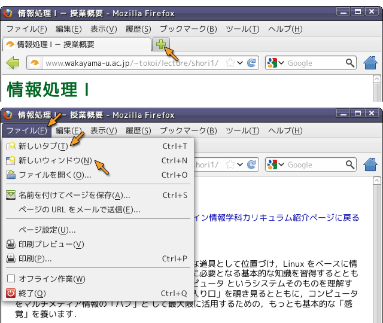
講義の Web ページを表示していないほうのウィンドウ（あるいはタブ）で，今作った profile.txt というファイルを開いてください．Firefox であれば，「ファイル」メニューから「ファイルを開く」を選ぶか，Ctrl-O をタイプしてください．
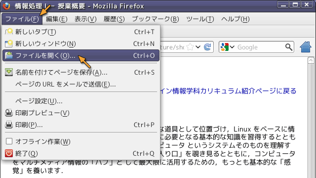
下のようなダイアログウインドウが現れますから，ファイルの一覧の中から html というディレクトリを探して選択した後，「開く」をクリックしてください．
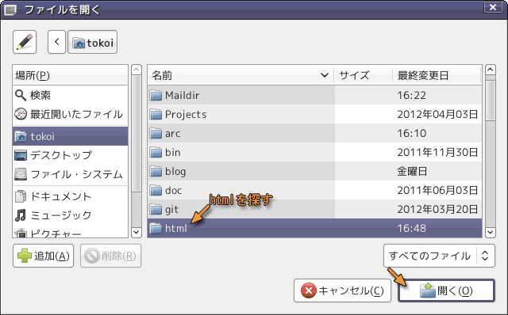
これでディレクトリhtmlの中のファイルの一覧が表示されます．もし profile.txt が現れなければ，右下のファイルの種類が「すべてのファイル」になっているかどうか確認してください．なっていなければ「すべてのファイル」に切り替えてください．profile.txt が現れたら，それを選択した後，「開く」をクリックしてください．
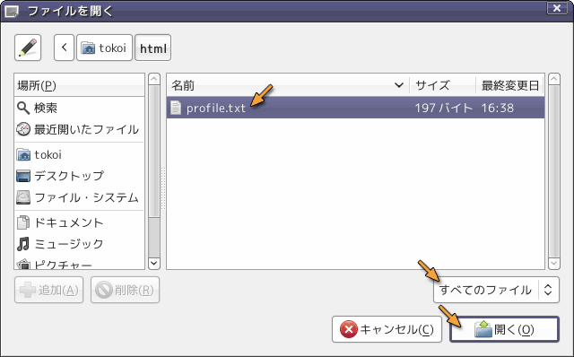
これで今作成したテキストファイルが Web ブラウザに表示されます．
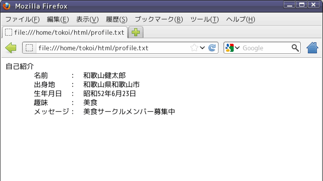
それでは，このテキストファイルを HTML ファイルだと思って，無理矢理 Web ブラウザで表示させてみます．これは，単にファイル名の拡張子を .html に変更するだけです．mv コマンドも使えますが，ここではファイルを別名で保存することにします．
ファイルを profile.html というファイル名で保存します．emacs の場合は C-x C-w をタイプし，ファイル名に profile.html とタイプして改行してください．
| emacsでファイルをprofile.html というファイル名で保存する | |
|---|---|
| C-x C-w をタイプ後 profile.html というファイル名を指定する | 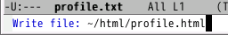 |
先ほどと同様に Web ブラウザから，今度は profile.html というファイルを開いてください．Firefox であれば，「ファイル」メニューから「ファイルを開く」を選ぶかCtrl-O をタイプしてください． ファイルの一覧の中に profile.html が現れたら， それを選択した後「開く」をクリックしてください．
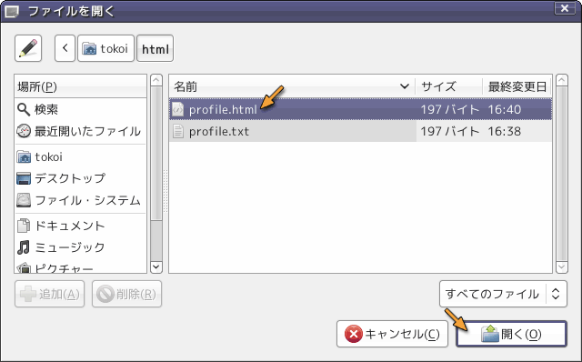
しかし，今度はレイアウトが崩れてしまいます．
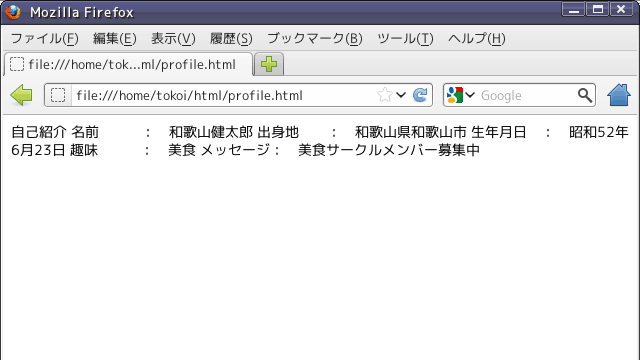
テキストファイルと言えども，コンピュータにしてみれば単なるデータ（２進数）の塊に過ぎません．そのため，それを画面に表示したりプリンタに印刷したりするときには，空白文字や改行文字などを手がかりにしてレイアウトを行っています．しかし，これは画面表示用のソフトウェアや印刷用のソフトウェアが，良かれと思ってやっているに過ぎません．実際，空白や改行を無視するように作られているソフトウェアは，多くの言語処理系（プログラミング言語を取り扱うソフトウェア）をはじめ少なからず存在します．それに空白文字や改行文字だけでは，複雑な文書を見栄えよくレイアウトすることは困難です．
テキストファイルに格納されている文書データは，一般に構造を持ったデータであると言えます．例えばレポートや論文などの文書は，下図のような構造を持っています．文書のレイアウトは，通常このような文書の構造を視覚的に表現したものだと言えます．ところがコンピュータは，人間のように文章の意味をもとに文書の構造を推定することができませんから，コンピュータが文書をレイアウトして表示するには何らかの手がかりが必要になります．
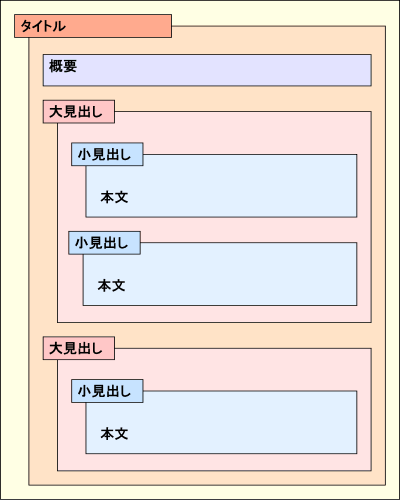
そこでテキストファイルに含まれる文書の構成要素に目印（マーク）を付けることによって，文書の構造を記述する方法が採られます．この作業をマークアップ（マーク付け）と呼びます．こうすることによって，コンピュータはマークを見るだけでその部分の表示方法や処理方法を決定できますし，テキストの一部分をデータとして取り出すことも容易になります．
もちろん，コンピュータが文章を読んで意味を理解し，文書の構造や構成要素（どこが見出しでどこが本文なのかとか）を推定することが可能なら，レイアウトを自動的に決定することが可能になります．これはプログラミング言語のように文法が単純であいまいさが存在しない場合には実用化されています（emacs なんかもそういう機能を持っています）．しかし人間が書いた文書，いわゆる自然言語の文書をコンピュータが読んで構造を自動認識する技術は，まだ一般的だとは言えません．
実際に profile.html をマークアップしてみましょう．「自己紹介」の文字の前後に <h1> と </h1> というタグを入れてください（下線部）．<h1>～</h1>は，この間のテキストが見出し (heading) であることを示します．見出しを示すタグには，他に <h2>～</h2> から <h6>～</h6> まであり，この数字が小さいほど重要度の高い見出しであることを示します．
<h1>自己紹介</h1> 名前 ： 和歌山健太郎 出身地 ： 和歌山県和歌山市 生年月日 ： 昭和52年6月23日 趣味 ： 美食 メッセージ： 美食サークルメンバー募集中
追加できたら，ファイルを保存してください． emacs の場合は C-x C-s をタイプます．そのあと Web ブラウザで「再読み込み」を行って，表示がどう変わるか確かめてください．
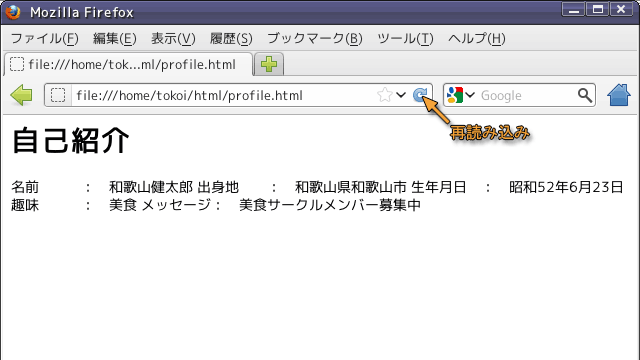
このように「ここは見出しである」とタグで印をつけた部分は，Web ブラウザによって見出しとして適当なスタイルにレイアウトされます．このように HTML によるマークアップは，Web ブラウザが文書を画面に表示する際のレイアウトを決定するのに使用されます．
さらに書式を整えていきましょう．HTML は W3C (World Wide Web Consortium) という組織によって規格化されているので，それにのっとって体裁を整えてやる必要もあります．下線部を追加あるいは修正してください．タイピングに時間がかかるようなら，下線部の内容を Web ブラウザからテキストエディタのウィンドウにコピー＆ペーストして構いません．
<!DOCTYPE html> <html lang="ja"> <head> <meta charset="utf-8"> <title>Profile</title> </head> <body> <h1>自己紹介</h1> <h2>名前</h2> <p>和歌山健太郎</p> <h2>出身地</h2> <p>和歌山県和歌山市</p> <h2>生年月日</h2> <p>昭和52年6月23日</p> <h2>趣味</h2> <p>美食</p> <h2>メッセージ</h2> <p>美食サークルメンバー募集中</p> </body> </html>
追加できたら，ファイルを保存してください．emacs なら C-x C-s をタイプします．そのあと Web ブラウザで「再読み込み」を行って，表示がどう変わるか確かめてください．今度はどのようにレイアウトされたでしょうか？
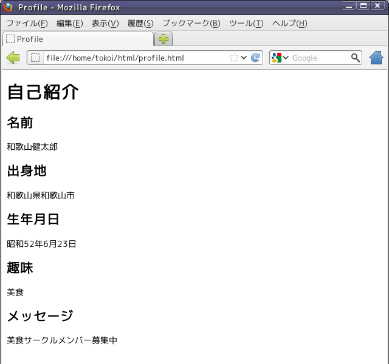
表示されたレイアウトは，<h2>～</h2> で挟んだ部分が（<h1>～</h1> で挟んだ部分より重要度の低い）見出しとして扱われ，<p>～</p> で挟んだ部分は本文として表示されます．<p>～</p> は，この間のテキストが本文中の１つの段落 (paragraph) であることを示します．このように HTML では，レイアウトの制御はマーク（タグ）によって行われ，改行やスペースは単なる区切り文字として扱われます．またマークアップされた文書の構成要素は，そのマークで示された意味をもとにレイアウトされます．
最初に pofile.txt で行ったようなリスト形式のレイアウトを行う場合は，<dl>～</dl> を使用します．<dl>～</dl> の中では，まず キーワードを <dt>～</dt>でマークアップし，それに続くキーワードの説明や定義などを<dd>～</dd>でマークアップします．
<!DOCTYPE html> <html lang="ja"> <head> <meta charset="utf-8"> <title>Profile</title> </head> <body> <h1>自己紹介</h1> <dl> <dt>名前</dt> <dd>和歌山健太郎</dd> <dt>出身地</dt> <dd>和歌山県和歌山市</dd> <dt>生年月日</dt> <dd>昭和52年6月23日</dd> <dt>趣味</dt> <dd>美食</dd> <dt>メッセージ</dt> <dd>美食サークルメンバー募集中</dd> </dl> </body> </html>
変更できたら，ファイルを保存してください．emacs の場合は C-x C-s をタイプしてください．そのあと Web ブラウザで「再読み込み」を行って，表示がどう変わるか確かめてください．
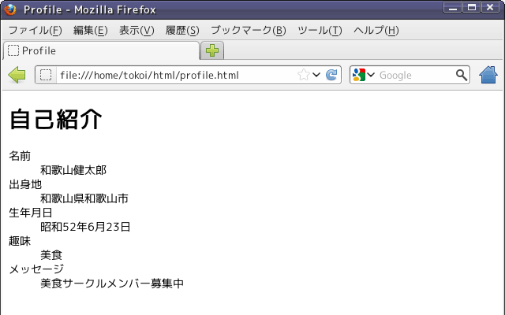
この HTML ファイルの構造は下図のように捉えることができます．
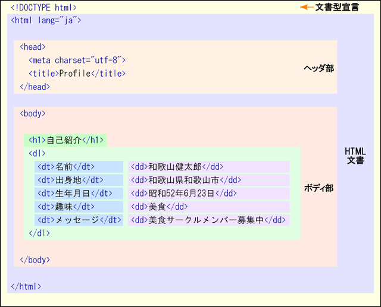
HTMLファイルの構造
- 文書型宣言
- 先頭の
<!DOCTYPE ....>の１行は文書型宣言といい，この文書が HTML 文書であることを宣言します．これは現在では，Web ブラウザに対して（後方互換モードではなく）標準モードに切り替えるためのスイッチとして働きます．文書型宣言は HTML のタグではありません．- HTML 文書
<html>～</html>でマークされた部分に HTML 文書を記述します．HTML 文書はヘッダ部とボディ部からなります．日本語を使用する場合は，lang属性に ja を指定します．- ヘッダ部
<head>～</head>でマークアップした部分はヘッダ部と呼ばれ，ここに Web ページのタイトルなど，様々な属性情報を記述します．<title>～</title>でマークアップしたものが Web ページのタイトルとなり，Web ブラウザのタイトルバー等に表示されます．Web ページには必ずタイトルを付けなければなりません．<meta charset="～">には文書に使用している文字コードを指定します．日本語を表現できる文字コードには，Windows や Mac OS X で使用されている Shift_JIS のほかに EUC-JP や ISO-2022-JP などがありますが，演習室の Linux では国際符号化文字集合 (UCS) の変換形式のひとつである UTF-8 を採用しています．- ボディ部
- Web ページの本文は
<body>～</body>でマークアップした部分に記述します．この部分をボディ部と呼びます．この部分に書いたものが，Web ブラウザ上に表示されます．
多くの Web サーバソフトウェアは，URL に含まれる HTML ファイルのファイル名を省略したとき（URL の最後が "/" で終っている時）に，特定の HTML ファイルを表示するように設定されています（その URL のディレクトリ一覧が表示される場合もあります）．和歌山大学で運用している Web サーバの多くは，この場合 index.html というファイルを表示するよう設定されています．
例えば http://www.wakayama-u.ac.jp/ を開いた時には，j実際には http://www.wakayama-u.ac.jp/index.html が表示されます．そこで，皆さんの Web ページの先頭のページ（トップページ，いわゆるホームページ）を，このファイル名で作成してみましょう．
テキストエディタで index.html というファイルを作成してください．emacs では C-x C-f をタイプして，ファイル名に index.html を指定してください．テキストエディタのコマンドの引数に index.html を指定しても構いません（その場合は pwd コマンドでホームディレクトリの下の html というディレクトリにいることを確認してください）．
| emacsでindex.html というファイルを作成する | |
|---|---|
| C-x C-f をタイプ後 index.html というファイル名を指定する | 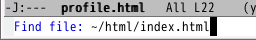 |
このファイルには， 次のような内容を書いてください．言うまでもないと思いますが，"Kentaro's" とか「和歌山健太郎」なんてのは適当に変更してください．
<!DOCTYPE html> <html lang="ja"> <head> <meta charset="utf-8"> <title>Kentaro's page</title> </head> <body> <h1>和歌山健太郎のホームページ</h1> <p>和歌山健太郎のホームページへようこそ．</p> <ul> <li>自己紹介</li> <li>時間割</li> </ul> </body> </html>
出来上がったらファイルを保存してください．emacs であれば C-x C-s をタイプしてください．そして先ほど Web ブラウザで profile.html を読み込んだのと同様にして（Firefox であれば「ファイル」メニューから「ファイルを開く」を選ぶか Ctrl-O をタイプして）index.html を読み込んでください．
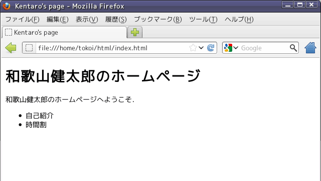
このページ (index.html) 上の特定個所をクリックして， 別のページを表示できるようにしてみましょう．このように HTML ファイルから別の HTML ファイルを参照することを，「リンクを張る」と言います．いまテキストエディタでは index.html を編集している状態だと思いますから， それに下線部の内容を追加してください．
<!DOCTYPE html>
<html lang="ja">
<head>
<meta charset="utf-8">
<title>Kentaro's page</title>
</head>
<body>
<h1>和歌山健太郎のホームページ</h1>
<p>和歌山健太郎のホームページへようこそ．</p>
<ul>
<li><a href="profile.html">自己紹介</a></li>
<li>時間割</li>
</ul>
</body>
</html>
出来上がったら C-x C-s でファイルを保存し，Web ブラウザで「再読み込み」を行ってください．自己紹介の文字の色が変わっていると思いますから， それをクリックしてください． 先ほど作った自己紹介のページが表示されましたか？
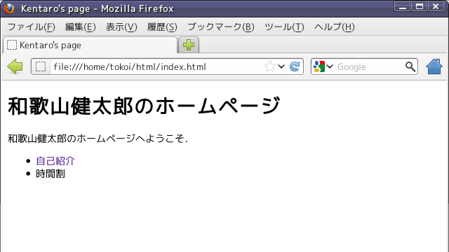
その他の HTML タグHTML には他にも多くのタグが存在します．別のページに HTML の概要を簡単にまとめてあります．なお，<CENTER>や<MARQUEE>，<BGSOUND>などのタグは，現在では廃止されたか，もともと規定されていません．これらは使わないでください．
次の (1) の作業を行ってください．それが完了したら，そのことをメールで tokoi@sys.wakayama-u.ac.jp に知らせるとともに，(2) の内容を送ってください．メールの件名 (Subject) は shori1-05 にしてください．期限は次週の水曜日中までです．